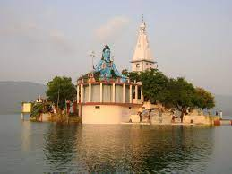
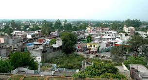
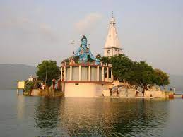
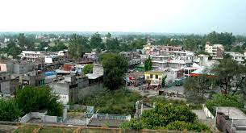

HIMACHAL PRADESH
OTHER DISTRICTS
UNA
UNA is a district in indian state of HIMACHAL PRADESH. Una shares ita border with the Hoshiarpur and Rupnagar districts of PUNJAB and Kangra,Bilaspur and Hamirpur districts of HIMACHAL PRADESH. The terrain is generally semi- hilly with low hills.
| Country | INDIA |
|---|---|
| State | Himachal Pradesh |
| Established | 1 september 1972 |
| Headquarters | Una |
| Tehsils | 5 |
| Government
|
|
| AREA | 1,540km²(590sq mi) |
| Population(2011)
|
|
| Demographics
|
Una has five thesils namily Ghanari, Haroli, Amb, Bangana and Una itself. It was thesil of Hoshiyarpur District until Punjab Reorganisation Act 1966 and KANGRA district until 1972 after which it become a district of Himanchal Pradesh
 


